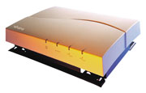
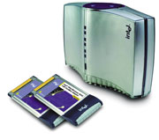
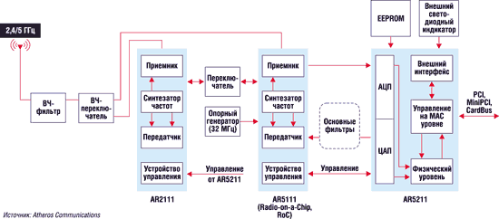

Ростислав Сергеев
Несмотря на продолжающийся на Западе спад в сфере ИТТ, многие компании уже вложили и продолжают вкладывать огромные инвестиции в развитие беспроводных технологий. В немалой степени этому способствовали прогнозы ведущих исследовательских фирм, предсказывающих в ближайшие 5-10 лет необычайно высокие темпы спроса на беспроводное оборудование с радиусом действия до 300 м. Так, по данным компании Cahners In-Stat, в 2005 г. число действующих WLAN-устройств превысит 500 млн штук.
В результате, несмотря на проблемы в части совместимости оборудования различных стандартов, многие компании уже приступили к ускоренному выпуску различных устройств для беспроводных сетей WLAN. Сегодня такое оборудование выпускают более сотни фирм, в их числе известные производители телекоммуникационного, сетевого и компьютерного оборудования - 3Com, Alcatel, Apple Computer, Avaya Communication, Cisco Systems, Compaq/Hewlett-Packard, Dell, D-Link, Enterasys Networks, Epson, Fujitsu, IBM, Intel, LG Electronics, NEC, Nokia, Nortel Networks, Philips, Siemens, SMC Networks, Sony, Toshiba, а также компании, специализирующиеся главным образом в области беспроводных технологий, - Agere, Alvarion, Intersil, Proxim, Symbol Technologies и многие другие. Российские производители, работающие в сфере беспроводных сетей передачи данных, - CompTek и "СиБи-Град", Информационная Индустрия", ЛОНИИР и "Связьинжиниринг" - пока не производят массового оборудования, предназначенного для создания WLAN, а выпускают отдельные специализированные устройства и компоненты, предназначенные в основном для операторских или корпоративных сетей (радиомаршрутизаторы, антенно-фидерные устройства, усилители, фильтры, коммутаторы и т. д.)
Рынок WLAN вновь начинает растиПо данным исследовательской компании Dell'Oro Group (http://www.delloro.com), рынок оборудования 802.11a и 802.11b после некоторого снижения в I квартале 2002 г. (с 363 млн в последней четверти 2001 г. до 350 млн долл.) вырос во II квартале на 8% и составил 380 млн долл. Во II квартале 2002 г. отмечалось также снижение цен на точки доступа на 13%, что отчасти и позволило изменить наметившуюся тенденцию. Лидер - Cisco Systems - увеличил свои доходы в этом секторе за квартал на 16%, в то время как ближайшие его преследователи - Linksys, Buffalo и D-Link добились только 3% роста. Рекордные показатели по темпам роста у пятого игрока рынка - NetGear (114%) В целом по итогам 2001 г. объем рынка WLAN-продуктов составляет 1,2 млрд долл., и к 2006 г. Dell'Oro прогнозирует его увеличение до 3,1 млрд долл. По прогнозам аналитиков фирмы, рост будет происходить главным образом в сфере SOHO (на 40% в год). В офисной сфере бурный рост начнется после принятия новых стандартов защиты информации для беспроводных сетей передачи данных (802.11i). |
Почти классические 2, 4 ГГц
Одними из первых вышли на рынок WLAN стандарта 802.11b в диапазоне 2,4 ГГц компании Aironet (в начале 2000 г. она была куплена Cisco Systems, семейство по-прежнему носит название Aironet) и Lucent Technologies (серии WaveLAN и WavePOINT, которые теперь в составе семейства ORiNOCO перешли к компании Proxim, а аналогичные продукты семейства Wireless выпускает компания Avaya Communication, отделившаяся от Lucent Technologies в 2001 г.), а также компания BreezeCom (после объединения с Floware в прошлом году стала называться Alvarion) c оборудованием BreezeNET.
В настоящее время в беспроводных сетях используются следующие основные типы устройств: точки доступа, радиоадаптеры, конвертеры интерфейсов, радиомосты и шлюзы. В последнее время все более популярны становятся беспроводные принт-серверы, точки доступа с функциями моста/маршрутизатора, а также радиомаршрутизаторы. Роль базовых станций в сетях беспроводного доступа выполняют устройства, получившие название точек доступа (AP - Access Point). Компьютеры и другое оборудование пользователей связываются с точками доступа с помощью радиоадаптеров.
В отличие от сетей сотовой связи, где характеристики базовых станций и абонентских терминалов кардинально отличаются, в сетях беспроводной связи такого принципиального различия нет. Например, масса типовой точки доступа без антенны для диапазона 2,4 ГГц составляет 300-500 г, а стоимость AP в среднем лишь в 3-5 раз выше, чем радиоадаптера. Идентичны и характеристики радиотракта у точек доступа и радиоадаптеров, выпускаемых одним производителем.
|  | Точка доступа AP-II производства компании Avaya.
|
Представленный на сегодняшний день спектр оборудования в диапазоне 2,4 ГГц огромен. Некоммерческая организация Wireless Ethernet Compatibility Alliance (WECA, http://www.wi-fi.org), образованная в 1999 г., проводит независимое тестирование оборудования для беспроводных локальных сетей различных производителей. Испытания выполняются независимой лабораторией по специальной программе. Продуктам, продемонстрировавшим соответствие спецификациям 802.11b и совместимость с другими устройствами этого стандарта, выдается сертификат Wi-Fi (точки доступа, имеющие сертификаты WECA, перечислены в табл. 1). В настоящее время в ассоциацию входят более 150 компаний, среди которых около сотни производителей (комплектующих и готовых устройств), а также операторы, поставщики услуг, разработчики ПО и другие фирмы.
Таблица 1. Сертифицированное WECA оборудование точек доступа стандарта 802.11b (Wi-Fi)
| Компания | Оборудование точек доступа (AP) | Адрес в Интернете |
| 3Com | AirConnect, AP 6000, AP 8000 | http://www.3com.com, http://www.3com.ru |
| Acrowave Systems | AAP-1100E | http://www.acrowave.com |
| Actiontec | 802 AI | http://www.actiontec.com |
| Agere Systems | Agere AP-200, AP-2000, BG-2000, ORINOCO AP-1000, AP-500, WavePOINT-II | http://www.agere.com |
| Ambit | T60H278 | http://www.ambit.com.tw |
| Apple | AirPort Base Station | http://www.apple.com, http://www.apple.ru |
| ARESCOM | Net DSL 1700 Series/ND1760 | http://www.arescom.com |
| Askey | RTW010, Access Point RTW020 | http://www.askey.com |
| Avaya | Wireless AP-I, AP-II, AP-3 | http://www.avaya.com, http://www.avaya.ru |
| Benq | AWR 770, AWL500 | http://www.benq.com.tw |
| BroMax | WA-300 | http://www.bromax.com.tw |
| Cisco Systems | Aironet 340, 350, 1200 Series | http://www.cisco.com, http://www.cisco.ru |
| Colubris Networks | CN3000, CN1054, CN1050, CN1000 | http://www.colubris.com |
| Corega | APL-11 | http://www.corega.co.jp |
| Crewave | CW-1100AP | http://www.crewave.com |
| Dell | TrueMobile AP1170/1K445, TrueMobile 1150 Series AP-1000 | http://www.dell.com |
| D-Link | DWL-1000AP, DI-713P, DWL-900AP, DWL-900AP+, DWL-120 | http://www.dlink.com, http://www.dlink.ru |
| EMTAC | A2588 | http://www.emtac.com |
| Enterasys Networks | RoamAbout Access Point 2000, RoamAbout R2 Access Platform / RBTR2-A | http://www.enterasys.com, http://www.enterasys.ru |
| Fujitsu | FMWT-501 | http://www.fujitsu.com |
| GemTek | WX-2211A | http://www.gemtek.com |
| Global Sun Technology | GL2411AP | http://www.globalsuntech.com |
| Hewlett-Packard | HP/Compaq WL-410, WL-510 | http://www.hp.com, http://www.hp.ru |
| IBM | 9085, AP500 | http://www.ibm.com, http://www.ibm.ru |
| Intel | PRO/Wireless 2011 LAN, Intel/Xircom APWE1100 Series, PRO/Wireless LAN | http://www.intel.com, http://www.intel.ru |
| Intermec | 2101 Universal Office AP, 2100, 2102 | http://www.intermec.com |
| Intersil | No Wires Needed 11Mbps Wireless LAN Enterprise Access Point | http://www.intersil.com |
| Ipone | AirGate 2000, 2500N | http://www.ipone.co.kr |
| Kyocera | KY-BR-WL100 | http://www.kyocera.com |
| Lancom Systems | ELSA LANCOM Wireless IL-11 AP | http://www.elsa.com |
| LG Electronics | LW2100AP, LW1100 AP | http://www.lgnetwork.com |
| Linksys | WAP11, Etherfast Wireless Access Point BEFW11S4, BEFW11S4 V.2 | http://www.linksys.com |
| Melco Inc. (Buffalo) | WLA-S11GK, WLA-L11G-WR, WLAR-L11, WLAR-128, WLAR-8000ACG | http://www.melcoinc.com |
| Microsoft | Broadband Networking Wireless Base Station/ MN-500 | http://www.microsoft.com |
| MMC Technology | MW-1000AP | http://www.mmctech.com |
| Motorola | SBG1000 | http://www.motorola.com |
| NEC | 336-0106697, 336-010732 | http://www.nec-global.com |
| NETGEAR | ME102, FM114P | http://www.netgear.com |
| Nokia | A032 WLAN Access Point, A036 WLAN Access Point, MW1122 ADSL/WLAN Gateway | http://www.nokia.com |
| NOVA Technology | NETESS-9100 | http://novatechnology.co.kr |
| OTC Wireless | AVCW-100, AVCW-109, AVCW-115 | http://www.otcwireless.com |
| Psion Teklogix | Wireless Gateway 9150 | http://www.psionteklogix.com |
| RFTNC Company | RF0Combo11A | http://www.rftnc.com |
| Samsung Electro-Mechanics | SWL-3300AP, SWL-6000AP | http://www.magiclan.com |
| Senao | SL-2511SR | http://www.senao.com |
| Siemens | I-GATE 11M I/LAN/S3129-K212-A | http://www.ic.siemens.com |
| SMC Networks | SMC2655W | http://www.smc-europe.com, http://www.smc.ru |
| Sony | PCWA-A220 | http://www.sony.com |
| Symbol Technologies | Spectrum24 AP4121, AP-4131 | http://www.symbol.com |
| TOKO | TMW1003 | http://www.toko.com |
| Toshiba | WRC-1000 | http://www.toshiba.com |
| TROY Wireless | TROY EtherPortal | http://wireless.troygroup.com |
| Wistron NeWeb | Acer Access Point Warplink 2412 | http://www.wneweb.com |
| Yamaha | RTW65 | http://www.yamaha.com |
| Z-Com | XI-1000 | http://www.zcom.com.tw |
Тем не менее различия в технических характеристиках устройств невелики, что отчасти обусловлено требованиями стандартов. В табл. 2 приведены сравнительные характеристики некоторых популярных моделей (по данным производителей). Как видно, среди приведенных здесь устройств лучшие показатели по чувствительности и разбросу задержек при многолучевом распространении внутри зданий имеет оборудование Aironet, обеспечивающее дальность связи до 40 м при скорости передачи 11 Мбит/с.
Таблица 2. Сравнительные характеристики оборудования точек доступа в диапазоне 2,4 ГГц (данные производителей)
| Скорость передачи | 11Мбит/с | 5,5 Мбит/с | 2 Мбит/с | 1 Мбит/с |
| Метод модуляции | BPSK | QPSK | CCK | CCK |
| Чувствительность приемника, дБм | ||||
| Cisco Aironet 350 AP | - 85 | - 89 | - 91 | - 94 |
| Compaq WL410 AP | - 82 | - 87 | - 91 | - 94 |
| Intersil IS37400M-EVAL | -84 (-71) | -85 (-76) | - 88 (-80) | - 90 (-82) |
| AmbiCom WL1100-AP | - 83 | - 86 | - 89 | 91 |
| Buffalo/Melco WLM-L11G | - 81 | - 84 | - 85 | - 87 |
| Разброс по задержке, нс | ||||
| Cisco Aironet 350 AP | 140 | 300 | 400 | 500 |
| CompaqWL410 | 65 | 225 | 400 | 500 |
| Intersil IS37400M-EVAL | 105 | 200 | > 290 | > 290 |
| Дальность связи внутри помещения (indoor), м | ||||
| Cisco Aironet 350 AP | 39,6 | н/д | н/д | 107 |
| Compaq WL40 | 25 | 35 | 40 | 50 |
| Intersil IS37400M-EVAL | 37 | 61 | 73 | 91 |
| AmbiCom WL1100-AP | 50 | 80 | 120 | 150 |
| Buffalo/Melco WLM-L11G | 50 | 90 | н/д | 115 |
| Дальность связи вне помещений (outdoor), м | ||||
| Cisco Aironet 350 AP | 244 | н/д | н/д | 610 |
| CompaqWL410 | 160 | 270 | 400 | 550 |
| Intersil IS37400M-EVAL | 152 | 243 | 396 | 533 |
| AmbiCom WL1100-AP | 250 | 350 | 400 | 500 |
| Buffalo/Melco WLM-L11G | 160 | 400 | н/д | 550 |
| Потребляемый ток, мА | ||||
| Cisco Aironet 350 AP | 450 (передача P=100 мВт), 270 (прием), 15 (sleep) | |||
| Compaq WL215 | 360 (передача P=70 мВт), 245 (прием), 10 (sleep) | |||
| Размеры (ВxШxГ) и масса | ||||
| Cisco Aironet 350 AP | 37x16x12 мм, 350 г | |||
| Compaq WL410 | 130x175x45 мм, 500 г | |||
| AmbiCom WL1100-AP | 130x180x40 мм, 365 г | |||
Выпускаемое для сетей WLAN оборудование работает в стандартном (2,4-2,4835 ГГц) или расширенном диапазоне частот (2,4-2,497 ГГц). Число рабочих каналов составляет 11 (США), 13 (Европа) или 14 (Япония). Однако в одной сети допускается одновременная работа только трех не перекрывающихся по частоте каналов. Для передачи данных c низкими скоростями (1 и 2 Mбит/с) используются традиционные методы модуляции BPSK и QPSK. Возможность работы со скоростью 5,5 и 11 Mбит/с реализована благодаря новому методу модуляции, получившему название "манипуляция дополнительным кодом" (CCK - Complementary Code Keying).
Точки доступа имеют невысокую излучаемую мощность, которая может достаточно гибко изменяться в зависимости от скорости передачи, например, в Aironet 350 AP в широких пределах от 1 до 100 мВт. Максимальная излучаемая мощность у разного оборудования обычно лежит в пределах от 50 до 100 мВт. Потребляемый ток зависит от режима работы и обычно не превышает 300 мА в режиме приема и 500 мА в режиме передачи.
В точках доступа применяются малогабаритные ненаправленные антенны с коэффициентом усиления 2-3 дБ. Отдельные производители используют антенны с разнесенным приемом. Так, антенна AIR-AP352E2С (Aironet 350 AP) состоит из двух разнесенных симметричных вибраторов с коэффициентом усиления 2,2 дБ каждый. В оборудовании 3Com Access Point 8000 используется система из четырех антенн, что увеличивает дальность связи до 300 м.
Беспроводные адаптеры поддерживают два режима работы: непрерывный и энергосберегающий (Sleep). В первом случае приемопередатчик всегда находится во включенном состоянии, а во втором он периодически включается, прослушивая сигналы "радиомаяков", которые регулярно излучает точка доступа, благодаря чему обеспечивается пониженное энергопотребление клиентского оборудования.
Надежность связи повышается за счет использования циклического избыточного кода (CRC) для проверки целостности данных и алгоритма потокового шифрования и восстановления данных (алгоритм RC4) с ключами 40, 64 и 128 бит WEP (Wired Equivalent Privacy). Применение более длинного ключа (128 бит) вместо ранее используемого длиной 40 бит затрудняет пассивный перехват данных и повышает криптостойкость, однако не все производители поддерживают эту функцию. Дополнительно для усиления защиты информации в новых моделях предусмотрено шифрование с динамической сменой ключей в начале каждого сеанса.
Аутентификация пользователей в большинстве устройств основана на таких проверенных практикой протоколах (стандарт 802.1x), как EAP (Extensible Authentication Protocol) и RADIUS (Remote Authentication Dial-In User Service). С их помощью реализуется единая процедура регистрации абонентов в сети.
Цены на однотипное оборудование различных производителей различаются в 3-7 раз. Так, стоимость радиоадаптера может составлять от 93 до 300 долл., а точки доступа - от 160 до 1000 долл. (табл. 3)
Таблица 3. Стоимость оборудования Wi-Fi некоторых производителей
| Производитель | Точки доступа | Радиоадаптеры | ||
| Название | Цена, долл. | Название | Цена, долл. | |
| Avaya | AP-I | 645 | Wireless PC Card world Silver | 189 |
| AP-II | 975 | Wireless PC Card world Gold | 209 | |
| AP-3 | 995 | |||
| Cisco | 340 Series AP | 400 | 340 Series | 300 |
| 350 Series AP | 750-850 | 350 Series PC Card, 128-bit WEP | 160-170 | |
| 3Com | AP8000 | 749 | Office Connect Wireless LAN PC Card | 93 |
| AP6000 | 499 | Wireless LAN PC Card | 119 | |
| AP2000 | 160 | |||
| Apple | Airport Base Station | 300 | Airport Client Card | 99 |
| Примечание: по оборудованию Avaya и Cisco - данные Diamond Communication (http://www.diamond.ru), по 3Com и Apple - данные производителей. | ||||
Новые технологии для 5 ГГц
Компания Intel демонстрирует свой подход к развитию беспроводных технологий, основанный на их интеграции с технологиями компьютерными. Основная идея концепции Radio Free Intel - встраивание радиосхем, обеспечивающих прием и передачу данных, в каждую выпускаемую схему или микропроцессорную плату. Эти радиочипы получили название "радио на кремнии" (Silicon Radio). Один такой чип может содержать более миллиона компонентов и работать на частотах 10 ГГц и выше. В качестве аналоговой части микросхем предлагается новая технология MEMS (Micro-Electro Mechanical System). Ее применение позволит существенно уменьшить размер и стоимость самых громоздких электронных компонентов, в первую очередь катушек индуктивности, конденсаторов, резисторов, реле, переключателей. В перспективе планируется даже заменить такие механические элементы, как электромоторы.
Корпорация уже начала поставку на мировой рынок семейства беспроводных устройств Intel PRO/Wireless 5000 LAN (табл. 4). В указанное семейство входит около 10 различных устройств. Базовое устройство - точка доступа Intel PRO/Wireless 5000 LAN AP, обеспечивающая связь в диапазоне 5 ГГц (стандарт 802.11a) с использованием программно переконфигурируемой антенны. Характеристики такой антенны пользователь может изменять самостоятельно с учетом конфигурации обслуживаемой соты. Каждая точка доступа обеспечивает связь по восьми не перекрывающимся по частоте каналам, обслуживая до 64 пользователей одновременно. Стоимость точки доступа составляет 360-380 долл. (по данным на сентябрь 2002 г.).
Таблица 4. Сравнительные характеристики оборудования точек доступа в диапазоне 5 ГГц (Wi-Fi 5)
| Intel PRO/Wireless 5000 | AR5001A (Atheros) | |
| Скорость передачи, Мбит/с | 6, 9, 12, 18, 24, 36, 48, 54 | 6, 9, 12, 18, 24, 36, 48, 54 от 12 до 108 (турбо-режим) |
| Метод модуляции | BPSK, QPSK, 16-QAM, 64-QAM | BPSK, QPSK, 16-QAM, 64-QAM |
| Диапазон частот, ГГц | 5,15-5,35 | 5,15-5,85 |
| Выходная мощность, мВт | 40-90 (зависит от режима работы) | н/д |
| Потребление, мА | 420 (передача), 420 (прием), 30 (режим Sleep) | н/д |
| Дальность связи в зависимости от скорости передачи | ||
| Внутри помещения, м | 91 (6 Мбит/с), 12 (54 Мбит/с) | н/д |
| Вне помещений, м | 305 (6 Мбит/с), 30 (54 Мбит/с) | н/д |
| Шифрование | 128, 64 и 0 бит (WEP) | AES, TKIP, WEP |
| Размеры и масса | 54x114x5 мм, 43 г | 7x7 мм (AR 2122), 9x9 мм (AR 5111), 15x15 мм (AR 5211) |
Если дооснастить точку доступа комплектом Upgrade Kit 802.b, она сможет работать одновременно в двух диапазонах. Для тех же, кто изначально планирует связь в диапазонах 2,4/5 ГГц, разработано специальное устройство Intel PRO/Wireless 5000 LAN Dual AP.
Большие надежды компания Intel возлагает на адаптер CardBus, предназначенный для ноутбуков, оборудованных PCMCIA-портом. Стоимость такого устройства не превышает 150 долл. Имея ноутбук с беспроводным адаптером, пользователи смогут поддерживать постоянную связь с локальными и глобальными сетями по беспроводным соединениям с возможностью прозрачного роуминга. Ожидается, что такое решение повысит спрос на ноутбуки, который вопреки ожиданиям производителей в последние годы оказался ниже прогнозируемого.
Передача данных в Intel PRO/Wireless 5000 LAN происходит со скоростью от 6 до 54 Мбит/с с использованием разных методов модуляции - BPSK, QPSK, 16-QAM и 64-QAM. Вместо прежней технологии расширения спектра DSSS используется ортогональное частотное разделение каналов (OFDM). Выходная мощность составляет 40-90 мВт и может автоматически изменяться в зависимости от скорости передачи данных и условий распространения радиоволн.
|  |
| Точка доступа Intel PRO/Wireless 5000 и радиоадаптеры.
|
Близкий к Intel подход развивает другая, молодая и весьма амбициозная американская компания Atheros Communications. За четыре года, прошедших с момента ее создания в мае 1998 г., она стала одним из лидеров на рынке WLAN, запатентовав более 40 технических решений.
Базовое устройство Atheros AR50001A (табл. 4) состоит из двух чипсетов. Первый из них получил название "радио на чипе" (RoC - Radio-on-a-Chip). Такая радиосхема обеспечивает двустороннюю связь в расширенном диапазоне частот 5,15-5,85 ГГц. Микросхема RoC при очень малых размерах (9х9 мм) включает передатчик, приемник, ВЧ-коммутатор и синтезатор частоты. Вся дальнейшая обработка сигналов, включая модуляцию/демодуляцию, кодирование/декодирование, синхронизацию и шифрование, осуществляется с помощью DSP-процессора во втором чипсете AR5211 (15х15 мм).
Проблема совместимости с устройствами диапазона 2,4 ГГц (802.11b) у Atheros решается сходно с технологией Intel - путем добавления к двум имеющимся чипам третьего, AR 2111 (7х7 мм). Три чипа вместе образуют чипсет AR5001X Combo WLAN. Этот чипсет наряду с поддержкой уже принятых стандартов 802.11a и 802.11b сможет работать и в сетях стандарта 802.11g, спецификации которого пока окончательно не утверждены (рисунок).
|  |
| Архитектура двухдиапазонного WLAN-устройства AR5001X Atheros Communications.
|
Разрабатываемое оборудование универсально и может использоваться в сетях WLAN обоих типов - с фиксированной и произвольной конфигурацией.
Другая отличительная особенность оборудования Atheros - возможность функционирования микросхем в турборежиме, в котором за счет объединения двух частотных каналов скорость передачи увеличивается в два раза. В модели AR5001A скорость передачи в турборежиме составляет 12, 18, 24, 36, 48 и 72 Мбит/c, а в последней модификации AR5001 разработчики пошли дальше, введя еще две градации скоростей - 96 и 108 Мбит/c.
Протокол 5-UP (5-GHz Unified Protocol) предусматривает автоматический выбор поднесущей для передачи трафика. Его применение существенно расширяет функциональные возможности оборудования, работающего в диапазоне 5 ГГц, снижая перегрузку сети и избавляя от проблем, которые свойственны диапазону 2,4 ГГц.
Вне зависимости от того, какой стандарт используется, оборудование 5-UP обеспечивает скорость передачи от 128 кбит/с до 108 Мбит/с дискретным шагом изменения скорости, кратным 128 кбит/с. Спектр использования таких устройств необычайно широк - от беспроводных телефонов до телевидения высокой четкости (HDTV) и персональных компьютеров, которые смогут работать в одной сети, поддерживая единый универсальный протокол. Компания Atheros направила спецификацию 5-UP в IEEE, однако реакция на него пока неизвестна.
Перечень компаний, разрабатывающих оборудование в диапазоне 5 ГГц, не ограничивается только Intel и Atheros. В этом секторе рынка уже начали поставлять оборудование компании Agere/Proxim, Xilinx (США), Systemonic (Германия) и т. д. Объявила о планах выпуска такого оборудования и российская компания CompTek (семейство Revolution).